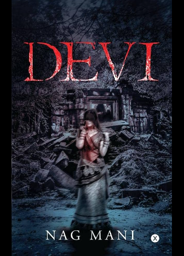
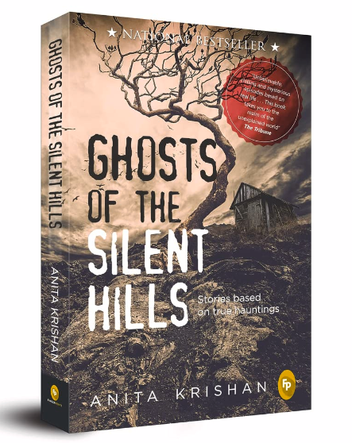
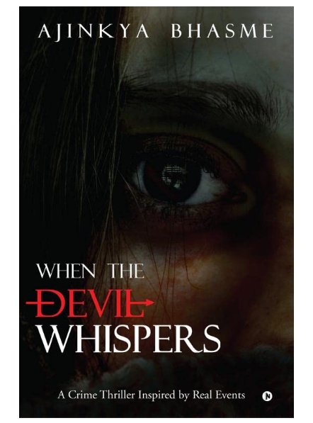

1. DEVI
Somewhere in a faraway village, there is the ruin of an ancient temple where no one worships. If you happen to come across it someday,
you should bow your head and walk away. Do not be tempted to go in, and temped you will be, for the Devi of the temple grants wishes.
But she must be promised something in return.Aditi talked to the stars when she was married to a man ten years older than herself,
and they whispered to her that she was responsible for her own happiness. And that was what she had been struggling to do, searching
for moments of joy in a patriarchal society… until she had to shift with her husband to Ufrail, a remote village in Bihar infamous
for its blood-curdling history.And then she hears about the temple of the Devi… and she is tempted! It was thrilling, scary, horrific,
surprising, satisfying, altogether it was a different experience. I love how the element of surprise was always there in the book,
which for me is very important in a horror book for it to be interesting.From first chapter till the last one, my excitement was to
another level. For all the horror fiction lovers out there, you should definitely read this book.
ABOUT THE AUTHOR:
The author of the book Devi Nag Mani published his debut novel, The Green Room in 2015. Devi is his second novel. He is an alumnus of
Sherwood College, Nainital and holds a B.Tech degree from Delhi Technological University. He is currently living in Bengaluru.
To shop

2. GHOSTS OF THE SILENT HILLS
The dead do not rest till they get what they want. You have arrived in the hills. In here, you are surrounded by dense, menacing
forests, enveloped in a deadly silence... You never know what lurks here in the Cold, dark night. Do not walk alone after sunset in
the hills. A beautiful woman in white haunts the Lonely pathways, looking to enchant and ensnare men.All the people who died in
accidents here. They say you hear their screams at night. And the deserted lodges sitting amidst lush greenery and calm streams.
Spirits lie in wait here, ready to prey on the living. There are sceptics who did not heed these warnings. They tried to rationalize
what they saw, what they felt. But when they came face to face with the beings that they believed didn’t exist, they couldn’t run
away anymore... Ghosts of the silent hills is a collection that will make your nights a little scarier, encompassing the very best
spine-chilling stories based on true hauntings.Though the author claims that she had applied her imagination in development of the
stories, she also had portrayed incidents based on real-life experiences of people in this book. Some of the stories are really
thought-provoking and will leave you truly astonished by creating an aura of strangeness and terror.
ABOUT THE AUTHOR:
Born in Shimla in 1955, Anita Krishan spent the initial twenty-two years of her life in this pristine Himalayan town, earning her
master’s degree in English literature from Himachal University, and moving on to a career of introducing delights of the language to
her young learners. In her long tenure as an educator, she has enriched the lives of countless students with the mystery of the
narrative. A versatile writer, each of her literary works appertains to a different genre.
To shop

3. WHEN THE DEVIL WHISPERS
The plot is so dangerously well placed that it left me out of breath towards the very end. The way everything came together was the
most excitement I've had in months. More than anything, the experience I had reading this thriller/horror was insanely satisfying.
It was like a disneyland ride. It started off slow and boy oh boy, as the end neared, it kept me on the edge of my seat. I am
definitely going to read it again keeping the end in mind, because it seemed to me like the author has given several clues since the
beginning, but we just tend to overlook it. It was one of those books where every line mattered. You missed reading a sentence and
you've missed a very important part of the plot. And don't even get me started on the cliffhangers. Oh sweet lord of books, I love
this one so much. What a brilliant thriller. When the Devil Whispers is a gruesome story of kidnappings and killings narrated in gory
detail by Ajinkya Bhasme. The book is quite gripping. Although it is apparently based on a real case, the writer should have
simplified it because a plethora of police inspectors and other characters tend to confuse the reader.
ABOUT THE AUTHOR:
Bhasme carefully crafts his works based on sever mental illness. He uses his research background from IIT Bombay and his diploma in
psychotherapy to dissect the most complicated stories human minds have to offer. His work is known to be fresh and on topics that have
never been touched before.Bhasme's work has garnered him many national and international literary accolades from some of the most
reputed media houses in the world. His books are known to be scary but have many trails of unsaid wisdom between the empty spaces.
To shop